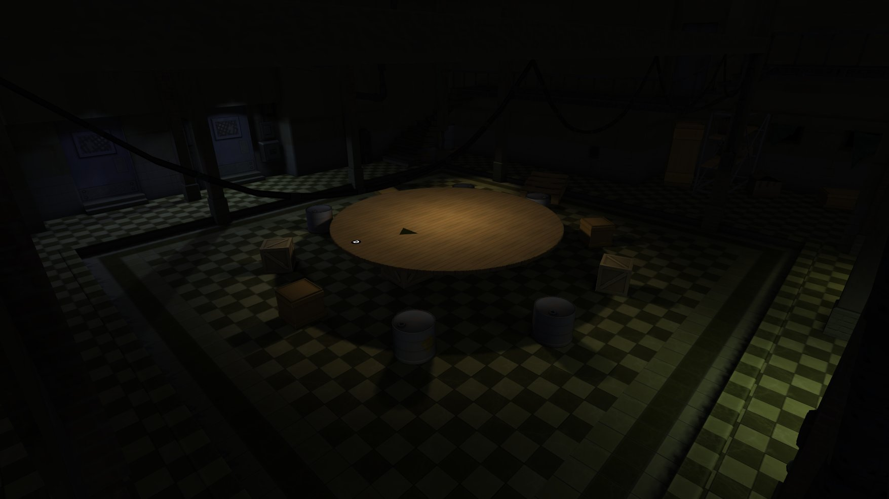
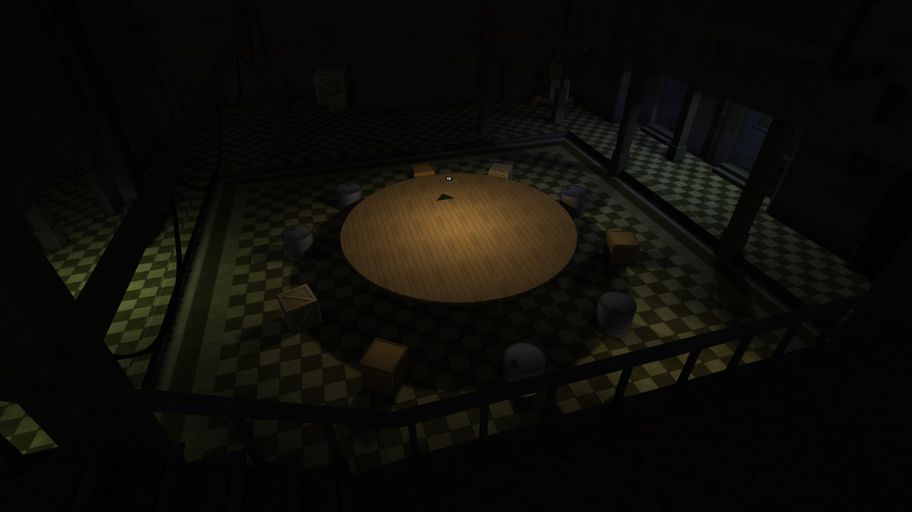

WebGL OpenSceneGraph
I am currently experimenting WebGL. I work with OpenSceneGraph and wanted to try something equivalent in javascript. Even though javscript is slower than C++ i wanted to try a proof of concept with WebGL and create a library similar to OpenSceneGraph. After experimenting a bit, i am convinced that a minimal OpenSceneGraph implementation would makes sense for developer to create new 3d applications on the web. I will continue in this direction and add features step by step... I did not implement reader of obj, collada or other files types, instead i created a json writer plugin for OpenSceneGraph then i am able to convert all input format that OSG is able to read and convert them into json. The idea is setup a webservice that will convert input files and return json files to use in javascript. The current demo uses few features, there is multitexturing (no dynamic lighting yet). I tried to implement the shader compositor like Roland submitted into OpenSceneGraph. My implementation is quick and dirty, so a lot of improvement will come soon.
To get a WebGL Implementation have look to Khronos instructions http://www.khronos.org/webgl/wiki/GettingaWebGL_Implementation
You have a browser that is able to run webGL try the realtime version

